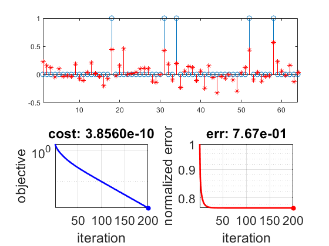

Contents
prepare workspace
clear; close all; home;
load the variables of the optimization problem
load('dataset.mat');
[m, n] = size(A);
set up the function and its gradient (* edit this *)
evaluateFunc = @(x) (1/2)*norm(A*x-b)^2;
evaluateGrad = @(x) A'*A*x - A'*b;
proj_4 = @(x) piecewise(x < 0,0 ,x > 0,x);
proj_5 = @(x) piecewise(x < 0,0 ,x > 0,x);
parameters of the gradient method
xInit = zeros(n, 1);
stepSize = 1/(norm(A,2).^2);
tol = 1e-4;
maxIter = 200;
tau = 5;
optimize
x = xInit;
objVals = zeros(maxIter, 1);
infErrs = zeros(maxIter, 1);
for iter = 1:maxIter
grad = evaluateGrad(x);
xNext = x - stepSize*grad;
funcNext = evaluateFunc(xNext);
objVals(iter) = funcNext;
infErrs(iter) = norm(x(:)-xtrue(:))/norm(xtrue(:));
fprintf('[%d/%d] [step: %.1e] [objective: %.1e]\n',...
iter, maxIter, stepSize, objVals(iter));
figure(1);
set(gcf, 'Color', 'w');
subplot(2, 2, 1:2);
stem(1:n, xtrue);
hold on;
stem(1:n, x, 'r*');
hold off;
xlim([1, n])
subplot(2, 2, 3);
semilogy(1:iter, objVals(1:iter), 'b-',...
iter, objVals(iter), 'b*', 'LineWidth', 2);
grid on;
axis tight;
xlabel('iteration');
ylabel('objective');
title(sprintf('cost: %.4e', objVals(iter)));
xlim([1 maxIter]);
set(gca, 'FontSize', 16);
subplot(2, 2, 4);
semilogy(1:iter, infErrs(1:iter), 'r-',...
iter, infErrs(iter), 'r*', 'LineWidth', 2);
grid on;
axis tight;
xlabel('iteration');
ylabel('normalized error');
title(sprintf('err: %.2e', infErrs(iter)));
xlim([1 maxIter]);
set(gca, 'FontSize', 16);
drawnow;
x = xNext;
end
[1/200] [step: 6.5e-03] [objective: 1.3e+01]
[2/200] [step: 6.5e-03] [objective: 6.7e+00]
[3/200] [step: 6.5e-03] [objective: 4.4e+00]
[4/200] [step: 6.5e-03] [objective: 3.1e+00]
[5/200] [step: 6.5e-03] [objective: 2.2e+00]
[6/200] [step: 6.5e-03] [objective: 1.7e+00]
[7/200] [step: 6.5e-03] [objective: 1.3e+00]
[8/200] [step: 6.5e-03] [objective: 1.0e+00]
[9/200] [step: 6.5e-03] [objective: 8.0e-01]
[10/200] [step: 6.5e-03] [objective: 6.4e-01]
[11/200] [step: 6.5e-03] [objective: 5.2e-01]
[12/200] [step: 6.5e-03] [objective: 4.2e-01]
[13/200] [step: 6.5e-03] [objective: 3.4e-01]
[14/200] [step: 6.5e-03] [objective: 2.8e-01]
[15/200] [step: 6.5e-03] [objective: 2.3e-01]
[16/200] [step: 6.5e-03] [objective: 1.9e-01]
[17/200] [step: 6.5e-03] [objective: 1.6e-01]
[18/200] [step: 6.5e-03] [objective: 1.4e-01]
[19/200] [step: 6.5e-03] [objective: 1.1e-01]
[20/200] [step: 6.5e-03] [objective: 9.6e-02]
[21/200] [step: 6.5e-03] [objective: 8.1e-02]
[22/200] [step: 6.5e-03] [objective: 6.9e-02]
[23/200] [step: 6.5e-03] [objective: 5.9e-02]
[24/200] [step: 6.5e-03] [objective: 5.0e-02]
[25/200] [step: 6.5e-03] [objective: 4.3e-02]
[26/200] [step: 6.5e-03] [objective: 3.7e-02]
[27/200] [step: 6.5e-03] [objective: 3.2e-02]
[28/200] [step: 6.5e-03] [objective: 2.7e-02]
[29/200] [step: 6.5e-03] [objective: 2.4e-02]
[30/200] [step: 6.5e-03] [objective: 2.1e-02]
[31/200] [step: 6.5e-03] [objective: 1.8e-02]
[32/200] [step: 6.5e-03] [objective: 1.6e-02]
[33/200] [step: 6.5e-03] [objective: 1.4e-02]
[34/200] [step: 6.5e-03] [objective: 1.2e-02]
[35/200] [step: 6.5e-03] [objective: 1.0e-02]
[36/200] [step: 6.5e-03] [objective: 9.1e-03]
[37/200] [step: 6.5e-03] [objective: 8.0e-03]
[38/200] [step: 6.5e-03] [objective: 7.0e-03]
[39/200] [step: 6.5e-03] [objective: 6.2e-03]
[40/200] [step: 6.5e-03] [objective: 5.5e-03]
[41/200] [step: 6.5e-03] [objective: 4.8e-03]
[42/200] [step: 6.5e-03] [objective: 4.3e-03]
[43/200] [step: 6.5e-03] [objective: 3.8e-03]
[44/200] [step: 6.5e-03] [objective: 3.3e-03]
[45/200] [step: 6.5e-03] [objective: 3.0e-03]
[46/200] [step: 6.5e-03] [objective: 2.6e-03]
[47/200] [step: 6.5e-03] [objective: 2.3e-03]
[48/200] [step: 6.5e-03] [objective: 2.1e-03]
[49/200] [step: 6.5e-03] [objective: 1.9e-03]
[50/200] [step: 6.5e-03] [objective: 1.7e-03]
[51/200] [step: 6.5e-03] [objective: 1.5e-03]
[52/200] [step: 6.5e-03] [objective: 1.3e-03]
[53/200] [step: 6.5e-03] [objective: 1.2e-03]
[54/200] [step: 6.5e-03] [objective: 1.1e-03]
[55/200] [step: 6.5e-03] [objective: 9.4e-04]
[56/200] [step: 6.5e-03] [objective: 8.4e-04]
[57/200] [step: 6.5e-03] [objective: 7.5e-04]
[58/200] [step: 6.5e-03] [objective: 6.8e-04]
[59/200] [step: 6.5e-03] [objective: 6.1e-04]
[60/200] [step: 6.5e-03] [objective: 5.4e-04]
[61/200] [step: 6.5e-03] [objective: 4.9e-04]
[62/200] [step: 6.5e-03] [objective: 4.4e-04]
[63/200] [step: 6.5e-03] [objective: 3.9e-04]
[64/200] [step: 6.5e-03] [objective: 3.5e-04]
[65/200] [step: 6.5e-03] [objective: 3.2e-04]
[66/200] [step: 6.5e-03] [objective: 2.9e-04]
[67/200] [step: 6.5e-03] [objective: 2.6e-04]
[68/200] [step: 6.5e-03] [objective: 2.3e-04]
[69/200] [step: 6.5e-03] [objective: 2.1e-04]
[70/200] [step: 6.5e-03] [objective: 1.9e-04]
[71/200] [step: 6.5e-03] [objective: 1.7e-04]
[72/200] [step: 6.5e-03] [objective: 1.5e-04]
[73/200] [step: 6.5e-03] [objective: 1.4e-04]
[74/200] [step: 6.5e-03] [objective: 1.2e-04]
[75/200] [step: 6.5e-03] [objective: 1.1e-04]
[76/200] [step: 6.5e-03] [objective: 1.0e-04]
[77/200] [step: 6.5e-03] [objective: 9.0e-05]
[78/200] [step: 6.5e-03] [objective: 8.1e-05]
[79/200] [step: 6.5e-03] [objective: 7.3e-05]
[80/200] [step: 6.5e-03] [objective: 6.6e-05]
[81/200] [step: 6.5e-03] [objective: 6.0e-05]
[82/200] [step: 6.5e-03] [objective: 5.4e-05]
[83/200] [step: 6.5e-03] [objective: 4.9e-05]
[84/200] [step: 6.5e-03] [objective: 4.4e-05]
[85/200] [step: 6.5e-03] [objective: 4.0e-05]
[86/200] [step: 6.5e-03] [objective: 3.6e-05]
[87/200] [step: 6.5e-03] [objective: 3.2e-05]
[88/200] [step: 6.5e-03] [objective: 2.9e-05]
[89/200] [step: 6.5e-03] [objective: 2.6e-05]
[90/200] [step: 6.5e-03] [objective: 2.4e-05]
[91/200] [step: 6.5e-03] [objective: 2.2e-05]
[92/200] [step: 6.5e-03] [objective: 1.9e-05]
[93/200] [step: 6.5e-03] [objective: 1.8e-05]
[94/200] [step: 6.5e-03] [objective: 1.6e-05]
[95/200] [step: 6.5e-03] [objective: 1.4e-05]
[96/200] [step: 6.5e-03] [objective: 1.3e-05]
[97/200] [step: 6.5e-03] [objective: 1.2e-05]
[98/200] [step: 6.5e-03] [objective: 1.1e-05]
[99/200] [step: 6.5e-03] [objective: 9.6e-06]
[100/200] [step: 6.5e-03] [objective: 8.6e-06]
[101/200] [step: 6.5e-03] [objective: 7.8e-06]
[102/200] [step: 6.5e-03] [objective: 7.1e-06]
[103/200] [step: 6.5e-03] [objective: 6.4e-06]
[104/200] [step: 6.5e-03] [objective: 5.8e-06]
[105/200] [step: 6.5e-03] [objective: 5.2e-06]
[106/200] [step: 6.5e-03] [objective: 4.7e-06]
[107/200] [step: 6.5e-03] [objective: 4.3e-06]
[108/200] [step: 6.5e-03] [objective: 3.9e-06]
[109/200] [step: 6.5e-03] [objective: 3.5e-06]
[110/200] [step: 6.5e-03] [objective: 3.2e-06]
[111/200] [step: 6.5e-03] [objective: 2.9e-06]
[112/200] [step: 6.5e-03] [objective: 2.6e-06]
[113/200] [step: 6.5e-03] [objective: 2.3e-06]
[114/200] [step: 6.5e-03] [objective: 2.1e-06]
[115/200] [step: 6.5e-03] [objective: 1.9e-06]
[116/200] [step: 6.5e-03] [objective: 1.7e-06]
[117/200] [step: 6.5e-03] [objective: 1.6e-06]
[118/200] [step: 6.5e-03] [objective: 1.4e-06]
[119/200] [step: 6.5e-03] [objective: 1.3e-06]
[120/200] [step: 6.5e-03] [objective: 1.2e-06]
[121/200] [step: 6.5e-03] [objective: 1.0e-06]
[122/200] [step: 6.5e-03] [objective: 9.5e-07]
[123/200] [step: 6.5e-03] [objective: 8.6e-07]
[124/200] [step: 6.5e-03] [objective: 7.7e-07]
[125/200] [step: 6.5e-03] [objective: 7.0e-07]
[126/200] [step: 6.5e-03] [objective: 6.3e-07]
[127/200] [step: 6.5e-03] [objective: 5.7e-07]
[128/200] [step: 6.5e-03] [objective: 5.2e-07]
[129/200] [step: 6.5e-03] [objective: 4.7e-07]
[130/200] [step: 6.5e-03] [objective: 4.2e-07]
[131/200] [step: 6.5e-03] [objective: 3.8e-07]
[132/200] [step: 6.5e-03] [objective: 3.5e-07]
[133/200] [step: 6.5e-03] [objective: 3.1e-07]
[134/200] [step: 6.5e-03] [objective: 2.8e-07]
[135/200] [step: 6.5e-03] [objective: 2.6e-07]
[136/200] [step: 6.5e-03] [objective: 2.3e-07]
[137/200] [step: 6.5e-03] [objective: 2.1e-07]
[138/200] [step: 6.5e-03] [objective: 1.9e-07]
[139/200] [step: 6.5e-03] [objective: 1.7e-07]
[140/200] [step: 6.5e-03] [objective: 1.6e-07]
[141/200] [step: 6.5e-03] [objective: 1.4e-07]
[142/200] [step: 6.5e-03] [objective: 1.3e-07]
[143/200] [step: 6.5e-03] [objective: 1.2e-07]
[144/200] [step: 6.5e-03] [objective: 1.0e-07]
[145/200] [step: 6.5e-03] [objective: 9.4e-08]
[146/200] [step: 6.5e-03] [objective: 8.5e-08]
[147/200] [step: 6.5e-03] [objective: 7.7e-08]
[148/200] [step: 6.5e-03] [objective: 7.0e-08]
[149/200] [step: 6.5e-03] [objective: 6.3e-08]
[150/200] [step: 6.5e-03] [objective: 5.7e-08]
[151/200] [step: 6.5e-03] [objective: 5.2e-08]
[152/200] [step: 6.5e-03] [objective: 4.7e-08]
[153/200] [step: 6.5e-03] [objective: 4.2e-08]
[154/200] [step: 6.5e-03] [objective: 3.8e-08]
[155/200] [step: 6.5e-03] [objective: 3.5e-08]
[156/200] [step: 6.5e-03] [objective: 3.1e-08]
[157/200] [step: 6.5e-03] [objective: 2.8e-08]
[158/200] [step: 6.5e-03] [objective: 2.6e-08]
[159/200] [step: 6.5e-03] [objective: 2.3e-08]
[160/200] [step: 6.5e-03] [objective: 2.1e-08]
[161/200] [step: 6.5e-03] [objective: 1.9e-08]
[162/200] [step: 6.5e-03] [objective: 1.7e-08]
[163/200] [step: 6.5e-03] [objective: 1.6e-08]
[164/200] [step: 6.5e-03] [objective: 1.4e-08]
[165/200] [step: 6.5e-03] [objective: 1.3e-08]
[166/200] [step: 6.5e-03] [objective: 1.2e-08]
[167/200] [step: 6.5e-03] [objective: 1.0e-08]
[168/200] [step: 6.5e-03] [objective: 9.5e-09]
[169/200] [step: 6.5e-03] [objective: 8.6e-09]
[170/200] [step: 6.5e-03] [objective: 7.7e-09]
[171/200] [step: 6.5e-03] [objective: 7.0e-09]
[172/200] [step: 6.5e-03] [objective: 6.3e-09]
[173/200] [step: 6.5e-03] [objective: 5.7e-09]
[174/200] [step: 6.5e-03] [objective: 5.2e-09]
[175/200] [step: 6.5e-03] [objective: 4.7e-09]
[176/200] [step: 6.5e-03] [objective: 4.3e-09]
[177/200] [step: 6.5e-03] [objective: 3.8e-09]
[178/200] [step: 6.5e-03] [objective: 3.5e-09]
[179/200] [step: 6.5e-03] [objective: 3.1e-09]
[180/200] [step: 6.5e-03] [objective: 2.8e-09]
[181/200] [step: 6.5e-03] [objective: 2.6e-09]
[182/200] [step: 6.5e-03] [objective: 2.3e-09]
[183/200] [step: 6.5e-03] [objective: 2.1e-09]
[184/200] [step: 6.5e-03] [objective: 1.9e-09]
[185/200] [step: 6.5e-03] [objective: 1.7e-09]
[186/200] [step: 6.5e-03] [objective: 1.6e-09]
[187/200] [step: 6.5e-03] [objective: 1.4e-09]
[188/200] [step: 6.5e-03] [objective: 1.3e-09]
[189/200] [step: 6.5e-03] [objective: 1.2e-09]
[190/200] [step: 6.5e-03] [objective: 1.0e-09]
[191/200] [step: 6.5e-03] [objective: 9.5e-10]
[192/200] [step: 6.5e-03] [objective: 8.6e-10]
[193/200] [step: 6.5e-03] [objective: 7.8e-10]
[194/200] [step: 6.5e-03] [objective: 7.0e-10]
[195/200] [step: 6.5e-03] [objective: 6.4e-10]
[196/200] [step: 6.5e-03] [objective: 5.8e-10]
[197/200] [step: 6.5e-03] [objective: 5.2e-10]
[198/200] [step: 6.5e-03] [objective: 4.7e-10]
[199/200] [step: 6.5e-03] [objective: 4.3e-10]
[200/200] [step: 6.5e-03] [objective: 3.9e-10]
